Repaso de la Tanda 10N12
El aviso pequeño en lo bloqueado, la lista del pase sin precios y con el botón fijo, HOY sin pase completo, el botón de la cama en HOY y siempre «Pase Roma». Marca cada punto en tu teléfono cuando lo hayas comprobado (se guarda en este navegador).
0 · Antes de empezar ✅ Hecho — Prompt guardado en docs/dias/PROMPT_TANDA10N12.md e incluido en el commitDónde: No es de móvil. ✅ Hecho — Reglas de la app: las nuevas de esta tanda, añadidas a docs/REGLAS_DE_LA_APP.md«Pase Roma» siempre, lista sin precios, HOY sin pase, botón de la cama y lo pendiente de varios destinos. Dónde: No es de móvil. ✅ Hecho — La película del pase no se toca; hasta 4 agentes, un servidor, hasta 2 Chrome; no apagar el PCSe reinició el PC antes de la tanda y se arrancaron la API y el Vite. El PC no se apaga. Dónde: No es de móvil. 1 · Lo bloqueado abre el aviso pequeño ✅ Hecho — El bloque gris «¿Dónde te alojas?» / «Dirección del hotel» de la hoja «Tu alojamiento» y el [Ir] con candado del día 1 de DÍAS abren el aviso pequeñoSu [Ver el Pase Roma] abre la lista. Dónde: Cuenta sin pase: RESERVAS > Alojamiento > Tu alojamiento; DÍAS > día 1. 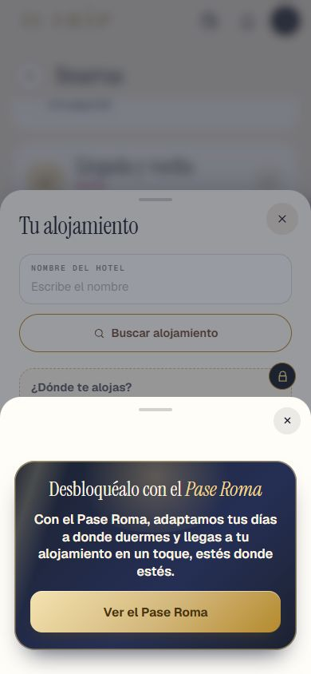
✅ Hecho — Repaso de todos los sitios donde algo bloqueado abría la lista directamentePasados al aviso pequeño: LineaDelPase (línea gris de la tarjeta de alojamiento de RESERVAS, de la hoja del vuelo y de la hoja «Tu alojamiento») y la vitrina de logros cerrada. Ya lo abrían: EXPLORAR Baños/Fuentes, Cerca de ti, Escuchar historia, segunda foto de Tus recuerdos. Siguen abriendo la lista, a propósito, los que son para ver el pase: pastilla «Pase Roma» de RUTA, [Ver] de la caja azul, [Ver el Pase Roma] de HOY sin pase y del aviso, tarjeta del pase de RESERVAS y de «Tu último día». Dónde: Cuenta sin pase: RESERVAS, EXPLORAR, logros. ✅ Hecho — Los textos del aviso (alojamiento y vuelo), con «Desbloquéalo con el Pase Roma» y [Ver el Pase Roma]Literales del prompt. El texto del aviso de Logros («Con el Pase Roma, cada sitio que ves suma a tus logros del viaje.») lo escribió el agente porque no había ninguno: dime si lo cambias. Dónde: Cuenta sin pase. 2 · La lista del pase ✅ Hecho — [Elegir mi pase] fijo abajo, siempre a la vista, sin precio; un solo botónEl botón fijo lleva un degradado oscuro encima de los últimos puntos que Design no tiene: dime si lo quito. Dónde: RUTA > pastilla «Pase Roma» (cuenta sin pase), bajar la lista. 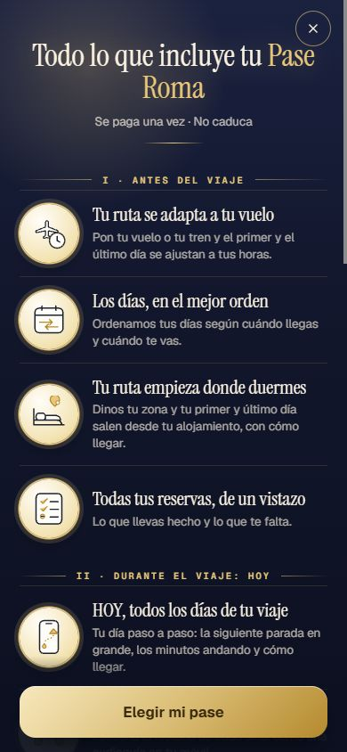
✅ Hecho — Fuera los precios de la lista (bloque del final y [Elegir mi pase] del final)Dónde: Final de la lista. 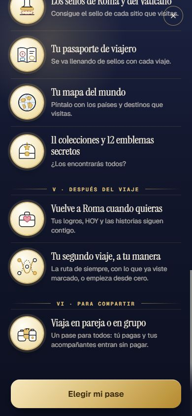
✅ Hecho — Los precios solo en «¿Cuántos sois?», que se abre al tocar [Elegir mi pase]Dónde: Lista > [Elegir mi pase]. 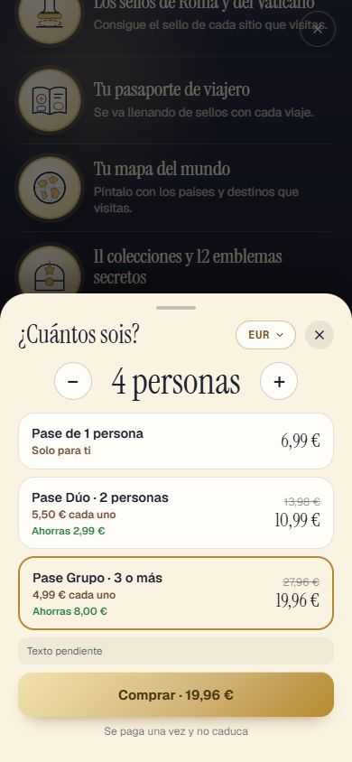
⚠️ A medias — El botón fijo no tapa el último punto ni pisa la barra del iPhoneMedido en 390×844 y 375×667 (hueco al final y safe-area); falta verlo en un iPhone real. Dónde: Final de la lista, en el iPhone. ✅ Hecho — Con el pase: sin botón fijo y «✓ Tu Pase Roma está activo»Dónde: Cuenta con pase. 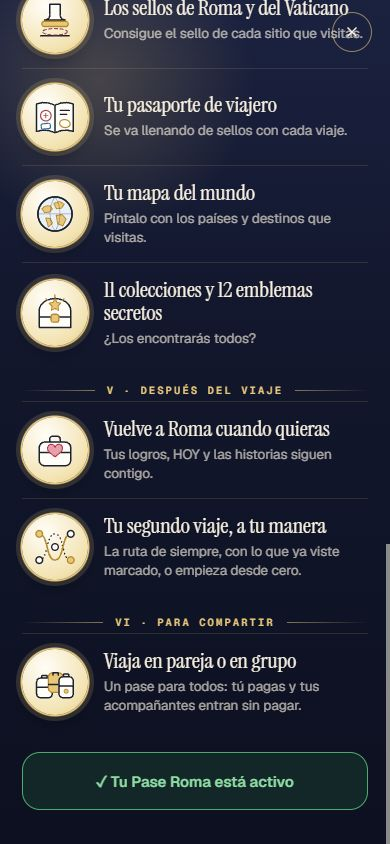
3 · HOY sin pase, completo ✅ Hecho — Se queda lo de Design (HOY, tu guía del día, los puntos, la caja del día de prueba, [Ver el Pase Roma]) y vuelve arriba lo de antes: «Pon tus fechas», la cuenta atrás, «Tu viaje ha terminado» y los avisos del día de pruebaDónde: HOY, cuenta sin pase (sin fechas / antes / después del viaje / día de prueba). 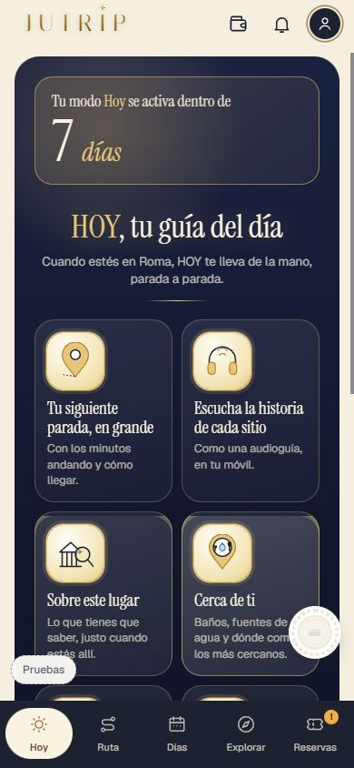
✅ Hecho — Fuera la ✕ de arribaDónde: HOY sin pase. 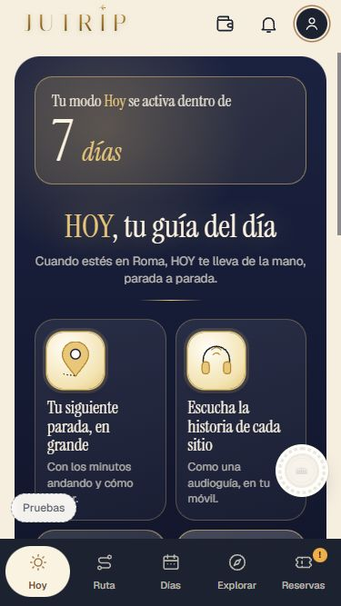
4 · El botón del alojamiento en HOY ⚠️ A medias — Botón pequeño, redondo, con una cama, siempre a la vista en HOY (todos los días del viaje, a cualquier hora), arriba a la derecha junto al títuloSale con pase en los días del viaje (llegada, medio, vuelta, excursión), no antes ni después, ni sin fechas. No se simuló la hora (no depende de ella). El día de prueba sin pase que enseña HOY completo también la lleva. Dónde: HOY con pase y un viaje dentro de sus fechas. 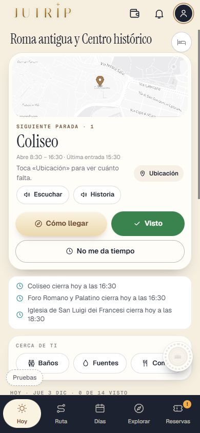
✅ Hecho — Con dirección abre el camino; con pase y sin dirección abre la hoja «Tu alojamiento»; sin pase no sale; las tarjetas de empezar y acabar el día se quedanEl día de vuelta, al empezar, tampoco sale la tarjeta (solo el botón). Dónde: HOY con pase. 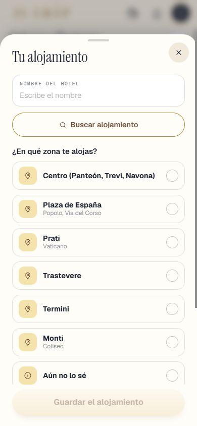
5 · Siempre «Pase Roma» ✅ Hecho — Fuera «Pase de Roma» en toda la app; con otro destino «Pase {Destino}»Comprobado por prueba en src, data, shared y server (incluidos los avisos del servidor). No probado con un viaje real a otro destino. Se deja «Pase de 1 persona» en «¿Cuántos sois?» (es la fila de 1 persona, no el nombre del pase). Dónde: Toda la app. 6 · Con varios destinos ✅ Hecho — Se queda como está y se apunta como pendiente en REGLAS_DE_LA_APP.md (apartado 6)Dónde: No es de móvil. 7 · La prueba ✅ Hecho — Solo las pruebas de lo tocado y pruebaJutrip, en 0 fallosPasadas las pruebas de lo tocado más pruebaJutrip (129/0), todas en 0 fallos (9 repetidas sueltas por la carga de 2 Chrome). Detalle en el informe. Dónde: No es de móvil. ✅ Hecho — Prueba nueva pruebaTanda10N12106 comprobaciones (a 15, b 63, c 28), 0 fallos. Dónde: No es de móvil. ⚠️ A medias — Capturas en docs/dias/capturas_jutrip/ y en REPASO_10N12.html, a 390×844 y 375×667Faltan las capturas de Design al lado de la lista y de HOY sin pase, y la del aviso a 375×667. Dónde: Esta página. 8 · El informe ✅ Hecho — Apartado «10N12» en INFORME_TANDA10B.md y esta lista al finalNo hace falta migración. Dónde: No es de móvil. Todas las capturas
10n12_aviso_01_hoja_alojamiento 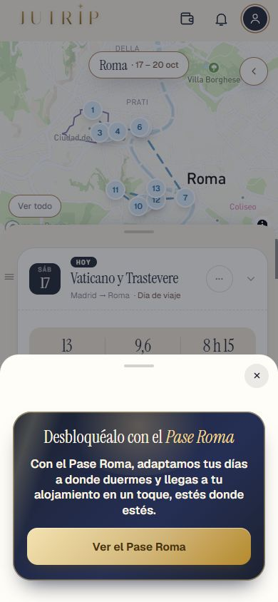
10n12_aviso_02_ir_dias 10n12_cama_hoy_1 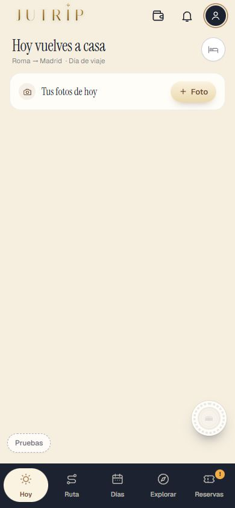
10n12_cama_hoy_2 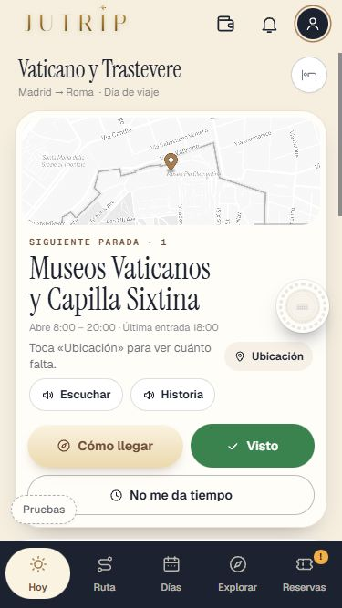
10n12_cama_hoy_375_llegada 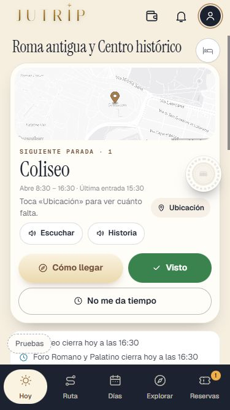
10n12_cama_hoy_375_medio 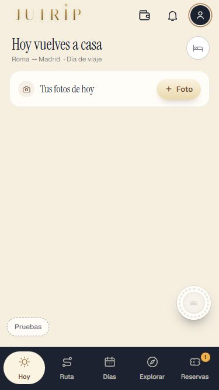
10n12_cama_hoy_375_vuelta 10n12_cama_hoy_hoja 10n12_hoy_sin_pase_1_cuenta_atras 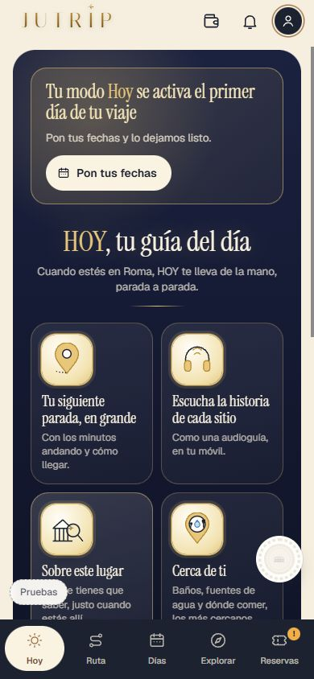
10n12_hoy_sin_pase_2_sin_fechas 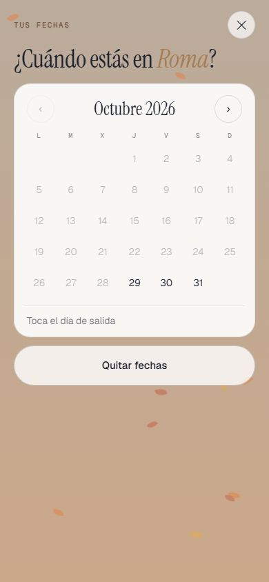
10n12_hoy_sin_pase_3_manana_prueba 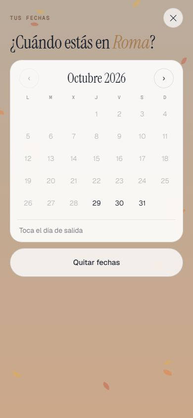
10n12_hoy_sin_pase_4_que_tal_ayer 10n12_hoy_sin_pase_5_terminado 10n12_hoy_sin_pase_6_375 10n12_lista_1_arriba 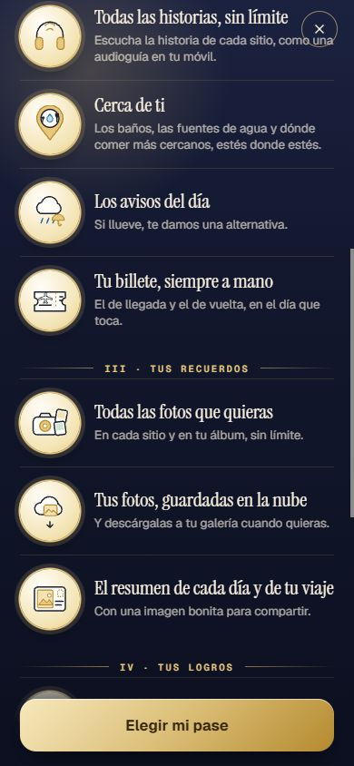
10n12_lista_2_medio 10n12_lista_375_final 10n12_lista_3_final 10n12_lista_4_cuantos 10n12_lista_5_con_pase